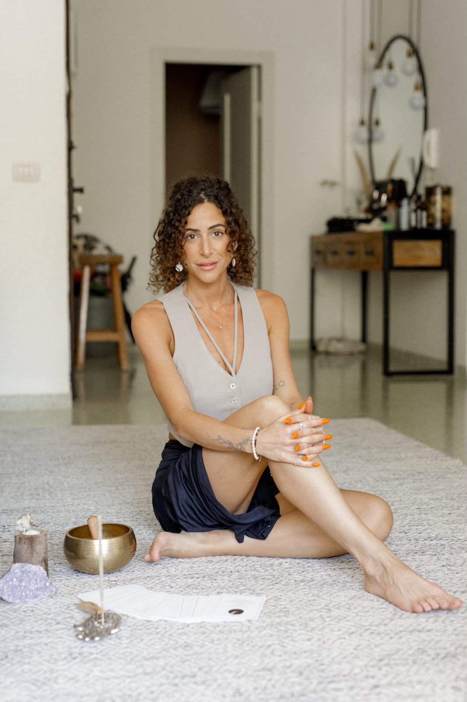

ליווי אישי לנשים בתהליך של ריברסינג (נשימה מעגלית) — לשחרור רגשי, התחברות מחודשת לעצמך ובהירות פנימית.
בקליניקה פרטית במודיעין, בקצב שלך, במרחב בטוח ולא שיפוטי.
שיחת ההתאמה היא ללא עלות וללא התחייבות.
את מתפקדת, מסתדרת, נראית בסדר מבחוץ.
אבל בפנים יש תחושה שמלווה אותך כל הזמן —
פער בין איך שאת רוצה להרגיש ולחיות, לבין מה שקורה בפועל.
אולי זה מתבטא בתקיעות באיזה תחום בחיים, בדפוסים שחוזרים על עצמם,
בקושי להציב גבול או לקבל החלטה.
אולי זו תחושה כללית של עומס, מתח, ולפעמים גם ביקורת עצמית שלא נותנת מנוח.
את יודעת שמשהו צריך להשתנות.
את רק לא בטוחה איך, ומאיפה להתחיל.
את לא צריכה לדעת את זה כבר עכשיו. בשביל זה אני כאן.
שמי עדי זהר רשף, ואני מלווה רגשית ואנרגטית לנשים בתהליכי שחרור רגשי, ריפוי והעצמה — בעזרת שיטת הריברסינג (נשימה מעגלית), בשילוב רייקי וכלים נוספים שרכשתי במהלך השנים.
אני עוסקת בתחום משנת 2023, מוסמכת על ידי "בית להיוולד מחדש" — המרכז הישראלי לנשימה מודעת, עם הכשרה כמטפלת ומנחה בריברסינג, הכשרת מאסטר, והתמחות נוספת בתחום.
הגעתי לריברסינג מתוך מסע אישי משלי. עברתי תהליכי טיפול רבים בחיים, ותמיד הרגשתי שמשהו נשאר על פני השטח — שיפור לזמן מה, ואז חזרה לאותם דפוסים. כשנחשפתי לריברסינג, גיליתי כלי שעבד אצלי אחרת — דרך הגוף ולא רק דרך השכל. זו החוויה שמלווה אותי גם היום, ושמתוכה אני מלווה את הנשים שמגיעות אליי.
אני מאמינה שכל אישה שמגיעה אליי יכולה להיות פה בדיוק כמו שהיא — באמת, באותנטיות, בלי מסכות ובלי שיפוטיות. המרחב הזה הוא שלך בלבד.

ריברסינג (rebirthing) הוא שיטת נשימה מעגלית — נשימה רציפה, ללא הפסקה בין השאיפה לנשיפה.
הנשימה הרציפה מאפשרת לגוף להיכנס למצב עמוק יותר של הרפיה, שבו עולה לעיבוד מה שמבקש להשתחרר: מתח שנאגר, רגשות מודחקים, דפוסים שחוזרים על עצמם.
למה זה שונה מטיפול שיחתי?
בשיחה, השכל שלנו פעמים רבות "שומר" עלינו ומתנגד לשינוי — לפעמים במודע, לפעמים לא. הריברסינג עובד אחרת: הוא מגיע ישירות דרך הגוף והנשימה, ומאפשר לעבד תכנים שלא תמיד נגישים רק דרך מילים.
זה לא טיפול נפשי וזה לא תחליף לטיפול רפואי או פסיכולוגי כשיש בו צורך — זה כלי משלים, עוצמתי בפני עצמו, לעבודה רגשית, אנרגטית וגופנית.
רוצה להבין אם זה מתאים לך? לשיחת התאמה חינמיתמתחילות בשיחה קצרה על מה שמעניין אותך לעבוד עליו היום. זה עוזר לדייק את הכיוון של המפגש.
שוכבות בנוחות על מזרן, בעיניים עצומות, בליווי מוזיקה. במהלך הנשימה עולים רגשות, תחושות גופניות ותכנים שמבקשים שחרור. אני נמצאת איתך לאורך כל הדרך, בקצב שלך.
בסוף הסשן יש מקום לשיתוף קצר, על מה שעלה ועל איך את מרגישה.
התהליך לא בא להחליף טיפול רפואי, פסיכולוגי או פסיכיאטרי כשיש בהם צורך. נשים המתמודדות עם משבר נפשי חריף, פוסט-טראומה מורכבת, או מצב רפואי משמעותי, מוזמנות לעדכן על כך מראש בשיחת ההתאמה — כדי שנוכל לבדוק יחד מה הדרך הבטוחה והנכונה ביותר עבורך.
כל מפגש מתקיים במרחב פרטי, דיסקרטי ולא שיפוטי — לא מצדי, ולא מצדך.
לפני כל שלב בתהליך, תמיד יהיה הסבר ברור ומקום לשאלות — כולל בקשת רשות מפורשת לכל מה שקשור למגע, גבולות או צילום.
אני נמצאת איתך באמת — בהקשבה ובהתאמה לקצב האישי שלך, בשיח ובנשימה. הריברסינג בטוח, ולא לוקח אותך למקום שאת לא בשלה אליו. אם משהו עולה — זה אומר שאת מוכנה לפגוש אותו, גם אם זה לא מרגיש כך בהתחלה.
את יכולה להגיע בדיוק כמו שאת. בלי מסכות, ובלי לחץ להיות במקום אחר.
"...היה לי מאוד קשה להאמין שנשימה יכולה להיות כל כך עוצמתית, אבל החלטתי לנסות. מהרגע שהתחלנו לדבר, הרגשתי שמתחברת לעדי בקלות ומשתפת אותה ברגשות שלי. אחרי כל טיפול הרגשתי שהגוף שלי מצליח לשחרר עוד ועוד. אחרי 5 טיפולים אני כבר מרגישה שינויים מטורפים בחיים שלי, רגועה יותר ואופטימית יותר. כל כך שמחה שעשיתי את התהליך הזה עם עדי, היא מדהימה!!"
— מאיה"מאוד פחדתי מהטיפול היום, כי בעבר חוויתי תחושות לא פשוטות שנמשכו כמה ימים. אבל הפעם משהו כאילו השתחרר. הדמעות שלי אחרי הטיפול לא היו דמעות של עצב, אלא של אופטימיות וחוזק — תחושה שהכל יהיה בסדר ושאני בדרך הנכונה. התחושה הטובה נשארה איתי, והייתי גדולה מהחיים ומאוד גאה בעצמי. תודה תודה עלייך, איזה מזל שפגשתי אותך."
— לקוחה, מתוך הודעת תודה לאחר מפגש"מצאתי אותך באינסטגרם ולקח לי זמן עד שלקחתי את הצעד. בשבועות האחרונים העליתי כל מה שפחדתי פעם להעלות. אחרי הסשן האחרון נפלה לי הבנה שמתחברת לי לחג — את ברכה לעולם ומתנה בשבילי. אוהבת אותך."
— לקוחה, מתוך הודעת וואטסאפ"עדי, תודה רבה רבה על הכל. כל כך נהנתי איתך ואני כל כך שמחה שעשיתי את התהליך הזה איתך!! אוהבת, שבת שלום 🙏"
— לקוחה, מתוך הודעת וואטסאפכל חוויה היא אישית ושונה מאישה לאישה.
שיטת נשימה מעגלית — נשימה רציפה, ללא הפסקות בין שאיפה לנשיפה — שמכניסה לגוף יותר חמצן ואנרגיה, ועוזרת לשחרר מתחים פיזיים ורגשיים בצורה טבעית.
לא. כל תהליך מותאם אישית לקצב שלך. בתחילת הדרך מומלץ לעבור כמה מפגשים (8–10) בליווי מטפל מוסמך, כדי לבסס היכרות בטוחה עם הנשימה.
ריברסינג מתאים לנשים רבות שמחפשות שחרור רגשי עמוק. עם זאת, לא כל אחת נמצאת בשלב המתאים לתהליך הזה כרגע — וההתאמה האישית נעשית בשיחה לפני תחילת הדרך.
מפגש היכרות — כשעתיים. מפגש רגיל — כשעה וחצי. זמן הנשימה עצמו הוא כ-40 דקות בממוצע.
זה משתנה מאישה לאישה, בהתאם למצב הרגשי, הגיל וחוויות העבר. כדי לעבור תהליך עומק משמעותי, מומלץ להתחיל ב-12 מפגשים שבועיים רצופים, ולאחר מכן אפשר לרווח את התדירות.
זה משתנה מאדם לאדם ואף ממפגש למפגש. לרוב חווים רגיעה עמוקה, חיבור לנשימה ולגוף, ועלייה של רגשות או תחושות שמבקשות שחרור. ויש גם מפגשים שבהם לא מרגישים הרבה — וזה בסדר גמור.
כן. הריברסינג עובד דרך הגוף, הנשימה והרגש — לכן לעיתים עולים רגשות, זיכרונות או תובנות שלא היה להם מקום ביומיום. כל מה שעולה הוא טבעי ולגיטימי, וכל אחת חווה את זה בקצב ובדרך שלה.
כן. במפגש ההיכרות תקבלי הסבר מעמיק על השיטה, הנחיה לביצוע הנשימה, ופירוט של תחושות שעשויות לעלות.
כן. אם יש התמודדות רפואית או נפשית משמעותית, חשוב לעדכן על כך מראש. בשיחת ההתאמה נעשה בירור קצר כדי לוודא שהתהליך מתאים ובטוח עבורך.
לא. ריברסינג אינו מהווה תחליף לטיפול רפואי, פסיכולוגי או פסיכיאטרי כשיש בהם צורך. הוא כלי משלים ועוצמתי בפני עצמו — לעבודה דרך הגוף, הנשימה והרגש.
המפגשים מתקיימים בקליניקה הפרטית שלי במודיעין. לא מעט נשים מגיעות גם ממרחקים גדולים יותר, כשהתהליך מרגיש להן נכון — אז המיקום לא צריך לעצור אותך אם זה מתאים לך.
משאירים פרטים או שולחים הודעת וואטסאפ, ואני חוזרת אישית לתיאום שיחת התאמה חינמית. בסיומה, אם זה מתאים — נתאם מפגש היכרות.
בשיחה (כ-30 דקות) נדבר על מה שמביא אותך לתהליך, אענה על השאלות והחששות שלך, ונבדוק יחד אם זה הזמן והמקום הנכונים בשבילך.
קיבלתי את הפרטים שלך, ואחזור אלייך בהקדם לתיאום שיחת ההתאמה. בינתיים נפתח עבורך חלון וואטסאפ עם ההודעה — אם הוא לא נפתח, אפשר ללחוץ על הכפתור למטה.
פתיחת וואטסאפאו פשוט: שלחי לי הודעת וואטסאפ
שיחת ההתאמה היא צעד קטן, חינמי וללא התחייבות. ואני כאן, לאורך כל הדרך.
לשיחת התאמה חינמית